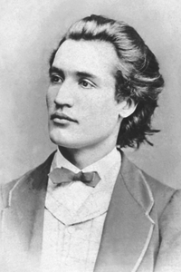

- Home
- Products
- Browser
- Contact
- About
- Review
1. Primii ani
1850-01-15 Se naste, la Botosani, Mihail, al saptelea copil al caminarului Gheorghe Eminovici (1812-1884) si al Ralucai, nascuta Iurascu (1816-1876). Copiii familiei Eminovici sunt numerosi : Serban, Nicolae, Gheorge, Ruxandra, Ilie, Maria, Mihail, Aglaia, Harieta, Matei, Vasile. Ruxandra, Maria si Vasile mor la varste fragede iar ceilalti cu exceptia lui Matei mor tineri si , in cateva cazuri, alienati mintal.
1850-01-21 Pruncul Mihail este increstinat la biserica din Ipotesti, nas fiindu-i bunicul matern, stolnicul Vasile Iurascu, ramas vaduv dupa ce sotia sa, Paraschiva, s-a rasturnat cu sania trasa de cai pe cand trecea podul peste Siret la 27 decembrie 1836.
1856-09-01 Primele doua clase primare le urmeaza la Pensionul Ladislau Ferderber din Botosani, scoala particulara la care se invata in 3 limbi. Aici au invatat si fratii sai mai mari: Serban, Nicolae, Ilie si Iorgu.
1858 Aron Pumnul isi pierde unicul fiu, Ioan, in anul 1856 si pentru a-si mai alina suferinta il ia pe Mihail ca "copil de suflet".
1858-10-01 Mihai Eminescu se inscrie in clasa a treia primara la National Hauptschule in Cernauti.
1859 Se indragosteste de Casandra, fata lui Gheorghe a Lupului, la Ipotesti. Ei ii dedica versurile "Prin lanuri inflorite noi mergem impreuna/ Si mandre flori campene eu pentru dansa strang / Si ea la ingrijirea-mi cea dulce imi zambeste, / Iar sufletul imi rade si inima imi creste. Avea par blond si era de o frumusete rara. Destinul ei este unul tragi, moare la 20 ianuarie 1864, la doar 19 ani de dropica (sau hidropizie - o boala care consta in acumularea anormala de lichid in corp si umflarea acestuia). Tristetea poetului rezulta din versurile dedicate ei " Ea a murit. - Am ingropat-o-n zare/ Sufletul ei de lume este plans. / Am sfarmat arfa - si a mea cantare / S-a innasprit, s-a adancit, s-a stins."
1859-07-01 Termina clasa a IV primara, cu un rezultat foarte bun : al 5-lea dintre 82 de elevi.
2. Anii de formare
1860-09-01 Se inscrie in clasa I la K. K. Ober Gymnasium din Cernauti. Mihail il va avea ca profesor de limba romana pe Aron Pumnul, autorul volumelor de texte romanesti Lepturariu romanesc. Desi "un asa de calduros suflet, un asa de nobil vizionar, invietorul constiintii de sine a romanilor bucovineni", Aron Pumnul "era de fapt un pedant stricator al limbii pe care vroia sa o indrepte, un om straniu pentru care totul se reducea la forma artificiala". Mihail "cerceta foarte sarguincios", "si-si imprumuta carti acasa". "Mic si indesat, cu parul negru pieptanat de la frunte spre ceafa, cu fruntea lata, fata lungareata, umerii obrajilor putin ridicati, ochii nu mari, dar vii, colorul fetei intunecat prin cae strabatea insa rumeneala sanatoasa a obrajilor Era totdeauna curat imbracat". Pentru a-si cumpara cartile de la anticariat sau de la ofertanti, Eminescu uita de foame. Citea cu interes romane, poezii populare, teatru, memoriale de calatorie si frecventa teatrele din Cernauti, cu prioritate Hotel de Moldavie.
1862 Ramane repetent in clasa a II-a de gimnaziu.
1862-09-15 - 1863 Repeta clasa a II-a de gimnaziu.
1863-04-01 Renunta la Ober Gymnasium. Situatia sa scolara va ramane nedeclarata.
1863-12-01 Moare fratele sau cel mai iubit , Ilie " De cate ori voi sa-mi amintesc figura unui om nobil si inteligent pe care nu-l cunosc imi iese Ilie inainte - pare ca vad inaintea mea ochii lui albastri - de cate ori citesc un pasagiu intelept imi pare ca-l aud citit de glasul lui"
1864-03-21 I se refuza o cerere de bursa la Gimnaziul din Cernauti .
1864-10-05 Pentru a nu fi o povara pentru ai lui si a nu se face de rusine in fata exigentului sau tata, Eminescu ocupa un post de copist la Tribunalul din Botosani.
1864-11-01 - 1865-03-05 Lucreaza ca "scrietor al Cancelariei" la Consiliul permanent al Judetului Botosani . Isi cere salariul pe februarie si isi prezinta demisia.
1865-03-01 - 1865-09-01 Insoteste trupa teatrala Fanny Tardini-Vladicescu.
1865-09-01 - 1866 Revenind la Cernauti si instalandu-se in casa lui Aron Pumnul va ocupa functia de bibliotecar.
1866-01-12 Participa la inmormantarea dascalului si mentorului iubit, Aron Pumnul, la Cernauti. Acesta a murit in urma unor suferinte cumplite ale cancerului de care suferea de ani buni. Cu aceasta ocazie citeste poezia "La mormantul lui Aron Pumnul".
3. Debutul
1866-01-12 Debut cu poezia "La mormantul lui Aron Pumnul" intr-o brosura votitiva "Lacramioarele invaetaeceilor gimnaseiasti de'n Cernaeuti la mormantul pre iubitului lor profesoriu Arune Pumnul intr'a 12/24 Ianuariu 1866". Poezia impreuna cu alte 6 elogii ale colegilor lui Eminescu, se distribuie omagial in ziua inhumarii la cimitirul din Horecea (Cernauti).
1866-02-25 Adevaratul sau debut literar are loc cand revista Familia ii publica poezia De-as avea, semnata Mihai Eminescu. Poezia este insotita de nota lui Iosif Vulcan "nasul" literar al poetului " Cu bucurie deschidem coloanele foaiei noastre literare acestui june numai de 16 ani, care cu primele sale incercari poetice transmise noua ne-a suprins placut" .
2. Anii de formare
1866-05-01 Mihai Eminescu calatoreste din Moldova spre Transilvania , ajungand in orasele Targu Mures si Blaj. Drumul , in cea mai mare parte, l-a parcurs pe jos: "Zi de vara pan-in seara am tot mers fara sa stau de fel. Soarele era la apus, aerul incepea a se racori, holdele pareau ca adorm din freamatul lor lung, de-a lungul drumului de tara oamenii se-ntorceau de la lucrul campului, cu coasele de-a spinare, fetele cu oale si donite in amandoua mainile, boii trageau incet in jug si carul scartaia, iar romanul ce mergea alaturi de ei si pocnea din bici isi tipa eternul sau hais, ho! ... Ascuns in maluri, dormea Murasul, pe el trosnea de carute podul de luntri, pe care-l trecui si eu".
1866-06-01 Mihai Eminescu ajunge in Targu Mures. Este adapostit de protopopul Partenie Trombitas in clopotnita. "M-am covigrat in clopotnita cu dintii clantanind si muiat pana la piele; parul meu cel lung imi cadea peste ochi, manutele mele slabe si reci le bagam in manecile ude. Asa am stat toata noaptea".
1866-06-05 La hanul "Calul alb" din Targu Mures, Eminescu ii intalneste pe elevii Ioan Cotta (Bicaz) si Teodor Cojocaru (Corbu) care venisera sa-l intalneasca pe hoinar, caci auzisera ei ca era poet si aduna folclor. Pornesc impreuna spre Blaj si ajungand pe Hula Sancelului (deal pe care astazi strajuieste Teiul lui Eminescu), poetul osteste: "Te salut din inima, Roma Mica! Iti multumesc, Dumnezeule, ca m-ai ajutat s-o pot vdea!".
1866-08-01 Revista Familia ii publica poeziile: Din strainatate, La Bucovina, Speranta.
1866-08-27 - 1866-08-28 Eminescu participa la Adunarea Generala a Asociatiunii de la Alba Iulia.
1866-09-30 Eminescu pleaca de la Blaj, spre Sibiu. Avea in gand sa aunga in Muntenia, pe care n-o calcase pana atunci. La Sibiu este gazduit de Nicolae Densuseanu, pe atunci student la Academia de Drept :" Abia se mai revedea un mic rest de acamasa neagra, iar pieptul de sus si pana jos era gol si cu mare necaz incerca bietul ca sa-si acopere pielea goala cu o jacheta rupta, in toate partile zdrentuita, de la maneci pana la coate, si cu niste simpli pantaloni zdrentuiti din sus si pana jos.". Densuseanu ii daruieste haine noi dar si o scrisoare de recomandare adresata protopopului Bratu din Rasinari (bunicul poetului Octavian Goga).
4. Sufleur si copiist
1867 In prima parte a anului se afla la Cernauti.
1867 Apar, in revista Familia, poeziile Ce-ti doresc eu tie dulce Romanie si La Heliade.
1867 Intra in trupa de teatru a lui Iorgu Caragiale, ca un fel de secretar.
1867-06-01 Eminescu a strabatut cu formatia lui Iorgu Caragiali Muntenia - cu reprezentatii la Ploiesti, Braila, Galati, Giurgiu si in alte localitati.
1868 Publica, in Familia, alte 2 poezii : La o artista si Amorul unei marmure.
1868-03-01 - 1868-09-01 Face parte, ca sufleur II si copist, din trupa de teatru a lui Mihail Pascaly, impreuna cu care ajunge din nou in Transilvania. Trupa da reprezentatii in orasele Brasov, Sibiu, Lugj, Timisoara, Arad, Oravita.
1868-05-15 - 1868-05-16 Succesul moral si material al reprezentatiilor trupei Pascally din Brasov au intrecut asteptarile. Cu aceasta ocazie, Eminescu scrie poezia Invia-vor voevozii!
1868-07-28 - 1868-07-31 Trupa Pascaly a sustinut 3 reprezentatii, iar la Arad Eminescu il cunoaste personal pe Iosif Vulcan.
1868-09-29 Ajunge in Bucuresti, unde recomandat de Pascaly, Eminescu este angajat sufleor la Teatrul National, fiind remunerat cu 166,66 lei lunar.
1869 In Familia apar poeziile Junii corupti si Amicului F.I.
1869-03-15 Angajamentul sau de sufleor, semnat pe 6 luni, inceteaza.
1869-03-16 Duminica seara asista impreuna cu Ionita Badescu si V. Dumitrescu-Paun la reprezentarea piesei "Dama cu camelii" de Al. Dumas-fiul.
1869-03-19 Eminescu asista la recitalul Carlottei Patti, inchinandu-i cantaretei italiene o dedicatie.
1869-04-01 Barbu Dimitrie Stirbei inchidea ochii la Nisa iar intr-o foaie volanta Eminescu scrie poezia La moartea principelui Stirbey, impreuna cu alti colegi: Badescu si V.D.Paun.
1869-04-06 Mihai Eminescu intra in societatea folcloristica "Orientul" a lui Gr. H. Grandea, dar si la Romanismul.
1869-05-01 Eminescu cu "ghetele rupte", paraseste Capitala cu trupa refacuta a lui Pascaly, amorezat pana peste cap de tanara interpreta Lina Popescu "Caci te iubesc, copila, ca zeul nemurirea,/ Ca preotul altarul, ca spaima un azil, / Ca sceptrul mana blanda, ca vulturul marirea, / Ca visul pe-un copil."
1869-07-03 - 1869-08-20 Colinda cu trupa lui Mihai Pascaly Moldova si Bucovina, pornind catre Galati si oprindu-se la Cernauti. Cu familia sa nu coresponda iar pe acasa nu mai trecuse de trei ani. "- Ce-au cu mine? Painea nu le-o mananc, pragul nu li-l calc. Lase-ma sa-mi merg calea mea si sa traiesc din putinul meu!".
1869-08-25 Eminescu trece prin Ipotesti si impacandu-se cu familia sa, se pregateste pentru a pleca la Viena.
5. Student la Viena si Berlin
1869-09-10 Eminescu, impreuna cu familia sa, plecau spre Viena. La Praga in atelierul lui Jan Tomas se vor fotografia. Eminescu alege sa-si faca un bust.
1869-10-02 Eminescu se inscrie la Facultatea de Filosofie din Viena : neavand bacalaureatul, el nu poate fi decat auditoriu extraordinar. Urmeaza cursurile doar primul semetru al anului universitar 1869-1870, din lipsa de bani nu poate audia si alte cursuri decat: Istoria filozofiei si Filozofie practica (Robert Zimmermann), Metafizica aristotelica (Theodor Vogt), Principii filozofice si introducere in filozofie si Exegeze din Descartes, Spinozza si Leibnitz. (K.S.Barach-Rappaport). " La Viena el trai in stramtorare vesela ca toti studentii romani, cunoscu pe Slavici, urma cursurile eclectic ( filosofie, istorie, drept, economie politica, anatomie) citind mai mult in casa ... Eminescu cat timp a petrecut la Viena arata de regula foarte bine si era deplin sanatos. Si radea adesea, cu o naivitate de copil, de facea sa raza si ceilalti din societatea lui, iar cand vorbea prin ras, glasul sau avea un ton deosebit, un ton dulce, molatic, ce ti se lipea de inima. Parul negru il purta lung, pieptanat fara carare spre ceafa si astfel fruntea sa lata parea si mai mare de cum era, ceea ce-i da o infatisare senina, inteligenta, distincta. Eminescu nu tinea defel la moda, dar hainele sale erau totdeauna curate si le purta atat de mult pana deveneau imposibile. A avea in garderoba mai multe randuri de haine de vara sau de iarna era dupa parerea lui Eminescu un lux fara de rost, de aceea la dansul vara nu aflai decat un rand de haine de vara si iarna numai unul de iarna. Cand vara avea lipsa de bani , el le punea zalog hainele de iarna si le scotea abia tarziu toamna. Stau mai bine acolo, imi zicea el, si sunt scutite de molii. Iarna purta un palton intunecat si o caciula de Astrahan, pe care si-o tragea pana peste urechi daca gerul era mare. Manele le tinea ferite in manecile paltonului pe care le impreuna la pipet . Vara era vecinic cu manele in buzunar . .. Cand il supara cineva la vreo discutie ii zicea ca este o secatura si numai daca discutia era foarte violenta si adversarul galacios si lipsit de logica, izbucnea si Eminescu si-i zicea esti o vita incaltata sau nu fi vita incaltata, dar aceasta se intampla foarte rar, pentru ca Eminescu era foarte cuviincios si prefera sa curme discutia si sa-i intoarca adversarului spatele, decat sa-l injure ... Cand neajunsuri, dureri si suferinte apasau greu sufletul lui Eminescu si era necajit de tot, atuncea ofta adanc si sfarsea cu expresia tu-i neamul nevoii! Vorba aceea era un fel de exclamatiune de usurare, dupa care se linistea si incepea alta vorba. Aceasta era unica expresie mai grea ce am auzit-o din gura Eminescu si despre care mi-a spus odata : asta-i unica injuratura pe care am deprins-o de la tatal meu. "
1869-10-20 Devine membru al societatii studentesti "Romania", platind taxa de inscriere un florint.
1870 Debut publicistic la "Albina" si articole de politica nationala la "Federatiunea" de Pesta.
1870 Plugusorul adresat domnitorului Alexandru Ioan Cuza care locuia bolnav de cancer pe strada Bilrothstrasse, nr.26. Colindatori: Eminescu, Vasile Burla si L.Nastasi.
1870-01-03 Eminescu participa la serbarea studenteasca de inceput de an, tinuta in Palatul Schonborn din Josephstadt. Cu aceasta ocazie, poetul rosteste o cuvantare "bine aranghiata si aleasa".
1870-01-15 Este invitat si ales in comisia de comasare a statuetelor, alaturi de : Aurel Muresanu, Ieronim Baritiu, Neculai Oncu, Vasile Burla, G.Baleanu, Neculai Peligrad.
1870-02-01 Eminescu este martor la ciocnirile violente dintre muncitorii vienezi si jandarmii; aceste eveimente il inspira si scrie satira Imparat si proletar.
1870-04-15 Convorbiri literare ii publica poezia Venere si Madona. " Cu totul altfel si fara indoiala mai putin ar fi fost Eminescu, daca nu ar fi facut parte din cercul literar al Junimii " avea sa traga concluzia scriitorul Ioan Slavici. Incepe colaborarea lui Mihai Eminescu la revista Convorbiri literare.
1870-11-01 Ii apare in aceeasi revista Convorbiri literare, Epigonii si basmul Fat-Frumos din lacrima. " Eminescu, cand scria, se inchidea in casa si nu-i parea bine daca venea vreun cunoscut la dansul. Daca insa intra acesta, il intreaba intr-un mod brusc : la ce ai venit? Respectivul nu putea sa petreaca mult la poet si din cauza ca atmosfera in locuinta lui Eminescu era infernala, caci lui ii placea prea mult cafeaua neagra si cand lucra, masina functiona fara intrerupere. Mirosul cafelei, al spirtului de la masina impreuna cu fumul tutunului, care impletea casa cu o ceata de nu puteai vedea obiectele cele mai aproape din casa, il alunga pre fiecare curand de la Eminescu. Renunta la mancare, daca avea numai cafea neagra. Lucrul principal ce-l facea cand primea banii de acasa era sa-si cumpere cafea si tutun pentru oarecare timp. "
1871 Publica in revista Convorbiri literare poeziile Inger de paza si Noaptea.
1871-03-18 Cerea familiei sa i se trimita bani, caci era chirias la "oameni saraci, cari asteapta ziua in care am sa le platesc locuinta ca pe o sarbatoare". Este bolnav: face o "aprindere de mate" si are si un inceput de otita.
1871-04-01 Astepta 8 galbeni de acasa, necesari pentru taxele semestriale.
1871-04-08 Apare Romania Juna, Eminescu este ales bibliotecar cu 30 de voturi, iar Slavici este desemnat presedinte pe baza celor 32 de voturi primite.
1871-05-15 In cinci numere din Convorbiri literare, a aparut studiul "Directia noua in poezia si proza romana", in care Titu Maiorescu salutase talentul lui Eminescu "in toata puterea cuvantului", situandu-l imediat dupa Vasile Alecsandri.
1871-08-11 Eminescu sosea la Cernauti pentru formalitati, apoi se indreapta direct spre Putna.
1871-08-14 Incep festivitatile de la Putna, anuntate cu 21 de salve de tun si cu primirea protocolara a oaspetilor. Cuvantul de bun sosit il tine Ioan Slavici si se intoneaza Imn incheiat lui Stefan cel Mare de Vasile Alecsandri, pe muzica lui Alex. Flechtenmacher.
1871-08-15 Se implineau 400 de ani de la tarnosirea Manastirii Putna, ctitorie a domnitorului Stefan cel Mare. Printre participanti : Ioan Slavici, Th. Stefaneli, Pamfil Dan si altii. Asculta cuvantarea lui A. D. Xenopol despre rapirea Bucovinei
1871-10-01 Se inscrie la Facultatea de Drept din Viena. Titu Maiorescu publica in Convorbiri literare un studiu in care va vorbi despre Mihai Eminescu " cu totul osebit in felul sau, om al timpului modern, deocamdata blazat in cuget, iubitor de antiteze cam exagerate, reflexiv mai peste marginile iertate, pana acum asa de putin format incat ne vine greu sa-l citam indata dupa Alecsandri, dar in fine poet, poet in toata puterea cuvantului". Act de mare curaj critic, alaturarea lui Eminescu, autorul doar catorva poezii, de Vasile Alecsandri, institutia literara a momentului, va starni un mare scandal la acea vreme.
1872 In perioada berlineza redacteaza o naratiune ampla, nefinalizata, publicata ulterior de George Calinescu , sub titlul Avatarii faraonului Tla.
1872-03-01 Continua studiile la Viena. Eminescu o va cunoaste la Viena pe iubirea si muza sa, Veronica Micle.
1872-05-13 Eminescu se angajeaza translator si secretar pe langa Theodor Rosetti.
1872-06-01 Titu Maiorescu se intalneste cu Mihai Eminescu la Botosani, se pare ca este prima lor intalnire.
1872-09-01 Mihai Eminescu citeste la Junimea in Iasi nuvela Sarmanul Dionis care se publica in Convorbiri literare si poemele Egipetul, Inger si demon, Floare albastra. Aceste poezii vor fi publicate in revista Convorbiri literare. Primeste o bursa de la Ministerul Cultelor si Instructiei Publice, condus de Titu Maiorescu.
1872-09-15 Eminescu merge la Ipotesti, sa-si vada familia.
1872-11-01 Mihai Eminescu se afla la Berlin.
1872-12-18 - 1873-07-26 Eminescu se inscrie la Facultatea de filozofie verlineza, din cadrul Friedrich Wilhelms Universitat, ca student regulat, ceea ce inseamna ca intre timp capatase un cetificat de absolventa a studiilor liceale. Are profesori vestiti pe Duhring (Logica, Principiile filozofiei), Zeller (Istoria generala a filozofiei), Helmholtz, Du Bois-Raymond, Lepsius (Istoria si monumentele Egiptului). In semestrul de vara, ii asculta pe Droysen (Istoria moderna), Lepsius (Obiceiurile si moravurile egiptenilor), Althaus( Dezvoltarea si critica filozofiei hegeliene)si pe dr. Duhring (Optimism si pesimism filozofic si politic, Logica si principiile filozofiei, Conceptia istoriei la istoricii vestiti).
1872-12-20 Inmatriculat, Eminescu asista la cursurile dr. Duhring.
1873 Urmeaza in continuare cursuri de filosofie, istorie si economie politica la Universitatea din Berlin
1873 Se sinucide, la Ipotesti, fratele sau Gheorghe, ofiter.
1873-12-01 - 1874-07-01 Eminescu audiaza prelegerile renumitilor profesori Bonitz (Principii de filozofie), Nitsch (Istoria romanilor), Poggendorf ( Geografia fizica), Nunk (Filozofia nervilor), Dernberg ( Institutiile romane si Istoria si aniticihitatile dreptului roman). Din acest timp dateaza si aventurile cu Milly, Clarisse Vernetz.
1873-12-06 - 1875-01-22 Eminescu figureaza in matricolele Universitatii din Berlin.
1874 Incepe sa traduca din Kant , Critica natiunii pure.
1874 Moare, la Berlin, rapus de tuberculoza, fratele lui Serban, medic de profesie.
1874 Medita la un roman "Aur, marire si amor"; in care vroia sa integreze fragmente mai vechi sau la care lucra.
1874-01-29 Titu Maiorescu il ruga pe Eminescu sa-i relateze studiule examenelor si daca daca s-a hotarat sa-si de adoctoratul. Maiorescu ii propunea catedra de filozofie de la Universitatea din Iasi. Eminescu refuza sa-si dea dcotoratul si sa accepte functia propusa de Maiorescu pentru ca se credea prea slab pregatit si "dupa constiinta mea totusi ea vine devreme".
6. Reintoarcerea in tara
1874-07-01 Intors in tara, Eminescu este gazduit in casa Pogor si intampinat cu multa caldura "Bine ai venit la Esi, domnule Eminescu!".
1874-08-01 - 1877-10-01 Eminescu a redactat cele mai frumoase poezii de dragoste, aparut in Convorbiri literare sau in Familia.
1874-08-24 Intors in tara, poetul este numit, printr-un ordin al Consiliului de Ministri, in functia de bibliotecar la Biblioteca Centrala din Iasi.
1874-08-30 Mihai Eminescu depune juramantul pentru investirea in postul de bibliotecar. "Jur de a-mi implini cu sintenie atoriele ce-mi impune functiunea mea. De a aplica legile si de a ma conforma legilor intru toate si pentru toti: fara pasiunea, fara ura, fara favoare, fara consideratiune de persoana, fara nici un interes direct sau indirect.". Juramantul a fost sustinut in fata rectorului Universitatii din Iasi, Stefan Micle., nimeni altul decat sotul Veronica Micle.
1874-10-01 - 1875 Salariat cu 200 lei, Eminescu suplineste la Logica pe A.D. Xenopol si la germana pe Samson Bodnarescu, la Institutul Academic de pe strada Muzelor.
1874-10-01 - 1875 Eminescu traduce gramatica paleoslava de A. Leskien, primele capitole din gramatica sanascrita a lui Franz Bopp si continua traducerea Criticii ratiunii pure de Kant, inceputa la Berlin.
1874-10-15 Eminescu solicita aprobarea unui credit de 385 lei pentru achizitii de texte: Sapte taine - Varlaam (1646), Psaltirea in versuri si Acatistul de la Uniev - Dosoftei (1673), Divanul sau Galceava inteleptului cu lumea - Dimitrie Cantemir (1698) si manuscrisele Isopiei, Istoriei universale de la zidirea lumii pana la Constantin si Iulian (1728).
1874-10-16 Este confirmat prin Decretul regal nr.1784, numirea lui Mihai Eminescu in postul de bibliotecar al acestei biblioteci.
1875 Eminescu este delegat sa participe ca observator la examenele elevilor Scolii normale "Vasile Lupu".
1875-07-01 Este numit in functia de revizor scolar. " Titu Maiorescu il va numi pe Eminescu revizor scolar pe doua judete Iasi si Vaslui (...) scotandu-l dintr-o functiune tihnita si propice studiilor si dandu-l drumurilor de tara si incertitudinilor luptei de partid. Cu tot scepticismul trainiciei noii slujbe, Eminescu se asaza la lucru cu o strasnicie asa de lipsita de diletantism, cu atata clarviziune pedagogica si sociala si spirit administrativ, incat acest an reprezinta, pe o suprafata mica, in istoria invatamantului rural inainte de Haret, cel mai ridicat nivel al constiintei culturale nationale. Noul revizor avea atributiuni indoite, administrative si pedagogice, trebuia, intr-un cuvant, sa conduca ancelaria revizorului si sa faca inspectiuni in scoalele dependinte de circumscriptiile sale din Judetele Iasi si Vaslui. Pentru aceasta munca extinsa, dar nicidecum odioasa unui intelectual, Eminescu era retribuit cu salariul de circa 500 lei noi, suma foarte considerabila pe acele vremi ".
1875-07-01 - 1876-06-06 In urma unui aranjament intre liberalii ieseni, condusi de Andrei Vizanti, si organizatia de centru a conservatorilor, Eminescu este destituit din postul de bibliotecar si numit revizor scolar peste judetele Vaslui si Iasi, in locul lui Agura. Eminescu intreprinde constiincioase activitati de indrumare, participa la examene si la anchete. S-a straduit pentru scolarizarea unui numar mare se copii si a cerut alfabetizarea maselor. La acea data, in judetul Iasi erau 230 de sate lipsite de scoli, la fel si in judetul Vaslui. Eminescu avea 20 de zile pe luna in care intra in contact cu realitatea de pe teren.
1875-07-12 Noul bibliotecar, D. Petrino, trimite o adresa ministrului G. Chitu prin care-l acuza pe Eminescu de furtul unor carti si al unor piese din mobilierul Bibliotecii Centrale. Va fi absolvit insa de instanta care a judecat procesul.
1875-07-20 - 1875-08-10 Eminescu tine conferinte invatatorilor din judetul Iasi.
1875-07-30 Eminescu il cunoaste pe badia Ion Creanga, cel care-i va deveni cel mai bun prieten.
1875-08-01 Cunoscand acum pe Ion Creanga, scriu amandoi cate un basm cu erou central asemanator, al lui Eminescu numit Calin (extras din cal); al lui Creanga Fat-frumos fiul iepei. Amandoua in proza, basmele raman nepublicate. " Din cele intai zile s-a stabilit mare prietenie intre Creanga si Eminescu, sau mai drept Eminescu a fost cuprins deodata de o mare dragoste pentru Creanga. .. Plecau amandoi si se infundau pe la vreun crasmar de prin Tatarasi, Pacurari sau Nicolina, adica prin partile exterioare ale orasului. Acolo nu se puneau pe baut, cum se pretindea sau cum se crede, nu ; ei se puneau sa traiasca o viata care le placea lor , viata simpla si primitiva. Era o placere pentru ei ca sa se aseze intr-o odaie din fundul crasmei, pe laviti din lemn, cu bratele rezemate de o masa murdara, serviti de un baiat naiv. Drept masa sau dejun, cereau sa li se friga o bucata de pastrama, mai mancau carnati cu usturoi - si vai de lume, cum erau preparati - ordonau ca sa li se aduca o cana de vin, de calitatea cum s-ar fi intamplat, si dupa ce mancau pastrama apoi inaintea unui pahar de vin, stateau toata noaptea daca crasmarul le dadea voie. Cand crasmarul voia sa inchida, ei plecau in alta parte a orasului, unde stiau ca localul sta deschis pana la ziua, si vorbeau, vorbeau dar si beau. Ce vrobeau intre ei? Eminescu si Creanga rar primeau cate un al treilea in intimitatea lor. Se intelegeau, cum se zice, ca gasca cu tata; ii uneau aceleasi aspiratii" (G.Panu)
1875-08-10 - 1875-08-30 Eminescu tine conferinte invatatorilor din judetul Vaslui.
1875-09-30 Eminescu merge la Cernauti, cu prilejul festivitatii inaugurale a Universitatii de la Cernauti.
1876 In revista Convorbiri literare apar poeziile Melancolie, Craiasa din povesti, Lacul, Dorinta si Calin.
1876-02-16 "A fost cea mai fericita a vietii mele. Eu am tinut pe Veronica in brate, strangand-o la piept, am sarutat-o. Ea-mi darui flori albastre pe care le voi tine in toata viata mea" avea sa noteze Mihai Eminescu.
1876-03-14 Eminescu tine prelegerea "Influenta austriaca asupra romanilor din Principate".
1876-06-01 - 1877-10-01 Mihai Eminescu colaboreaza la Curierului de Iasi, in care a publicat nuvelele Cezara si La aniversara, semnata cu pseudonimul Gajus.
1876-06-04 Eminescu este "pus in disponibilitate prin decret domnesc" din functia de revizor scolar si i se cerea sa predea arhiva revizoratului institutorului Darzeu. Se retrage in bojdeuca din Ticau, la bunul sau prieten, Ion Creanga.
1876-07-01 Eminescu face o calatorie la Bucuresti, vizitand pe binefacatorul sau, Titu Maiorescu.
1876-08-13 Moare mama sa, Raluca Eminovici. Suferea de cancer si nervii o lasasera. Aceasta pierdere ii intristeaza si mai mult sufletul lui Mihai Eminescu.
1876-08-15 Este inmormantata Raluca Eminovici in cimitirul din Ipotesti.
1876-08-17 Vrea sa o convinga pe Veronica Micle, mama a doua fete, sa fuga cu el in lume. Veronica pleaca in vacanta, si Eminescu, intors de la inmormantarea mamei sale, o acuza de infidelitate. Scrie elegia "Pierduta pentru mine zambind prin lume treci".
1876-10-08 In Curierul de Iasi, cel mai probabil la insistentele lui Mihai Eminescu, ii apare Veronicai Micle traducerea Morellei de Edgar Allan Poe, ub pseudonimul Tolla.
1877-10-01 In urma unui conflict cu directorul tipografiei, poetul paraseste fortat Curierul de Iasi. Atmosfera din fosta capitala a Moldovei o gaseste sufocanta, dupa cum i se destainuie lui Maiorescu, intr-o scrisoare " (...) pentru mine o evadare din Iasi ar fi foarte bine venita. Caci nimic nu intrece marginirea provinciala a Iasului, sicana de vorbe inradacinata la Junimea, felul de a discuta, indeajuns de stufos, cu care onorata societate intampina de la o vreme orice lucrare . In ce ma priveste cred am facut cativa pasi inainte, Junimea sustine ca as fi dat inapoi "
1877-10-12 Mihai Eminescu urma sa se mute in capitala, la redactia ziarului Timpul, preluat de Titu Maiorescu. Socotea ca trebuie curmata si legatura cu Veronica. Ea era sotia unui om onorabil pe care-l respecta si mama a doua fete. Oricat pastrau ei aparetele si indeosebi Veronica , tratandu-l in societate cu raceala, barfele existau. Despartirea de Iasi avea sa-i fie foarte grea, mai ales ca acest oras ii devenise oras de bastina si tot in el isi lasa iubirea.
1877-10-15 Mihai Eminescu, dupa ce s-a consultat si cu Veronica, raspunde afirmativ propunerii de a veni la ziarul Timpul . Incearca sa-si ia ramas bun de la Veronica dar nu o gaseste acasa . Amarat, se urca in trenul spre Capitala
1877-10-27 Este numit redactor al ziarului "Timpul" din Bucuresti si, lasand o scrisoare violenta Veronicai, paraseste Iasul. Ii va avea colegi pe Caragiale si pe Slavici, la care poetul va locui o vreme, dupa ce schimbase mai multe gazde. Ziarul nu avea un buget stabil. " Eminescu era un fel de biblioteca ambulanta, incat nu era cu putinta sa se puna la ordinea zilei vreo cestiune, asupra careia nu era orientat si nu era in stare sa-si deie parerea mai inainte de a se fi dumerit in toate amanuntele. Inzestrat cu o memorie uimitoare, el nu uita niciodata ceea ce stia si se folosea cu usuratate de stiinta lui in ceea ce priveste faptele si oamenii. Poetii sunt, in genere, slabi prozatori, fiindca, scriind in proza, nu au cuvenita bagare de seama in ceea ce priveste alegerea, intrebuintarea si asezarea vorbelor. Desi scria rapede, isi masura vorbele cu multa grija si numai la mare zor publica ceea ce scria fara ca sa fi citit cuiva manuscriptul, niciodata fara ca sa-l fi recitit el insusi. Eram in redactiune el, Caragiali si eu, si o duceam in necurmate discutiuni gramaticale, in care Eminescu era totdeauna foarte simtitor. Urmarea fireasca era caq eu scriam putin, iara Caragiali facea mereu corecturi in manuscriptul sau si ajungea sa publice putin , incat Eminescu le facea adeseori el singur toate. Om foarte muncitor si constiincios, el era totdeauna la locul lui. Desi pierdut mereu in ganduri ori adancit in studii, incat uita sa manance ori se lipsea de tigna somnului, el nu-si pierdea niciodata din cedere datoriile si, chiar bolnav, dac-ar fi fost, venea regulat la redactiune, se interesa de toate si tinea sa fie totdeauna la curent " (Ioan Slavici)
1877-11-04 Plin de speranta, Mihai Eminescu incepea sa lucreze in redactia ziarului Timpul. La Bucuresti, Eminescu nadajduia in sprijinul lui Titu Maiorescu si se baza si pe colegialitatea inca din timpul studentiei cu Ioan Slavici.
1877-12-19 Titu Maiorescu se interesa de situatia financiara a "protejatilor" sai, Ioan Slavici si Mihai Eminescu, neplatiti de cateva luni ca redactori. Negruzzi intr-o scrisoare adresata lui Titu Maiorescu ii descria situatia: "Pogor ma scoate din sarite. Am fost la dansul, am staruit sa adune bani si sa vi-i trimita, dar am fost totdeauna intampinat cu aceeasi linistita suparare ce-l caracterizeaza. Cu dansul nu e de facut treaba. De geaba: Pogor nu-i omul care ar putea esi din nemiscarea si pasivitatea sa pentru nimic in lume. Tara piere, Pogor se piaptana! Adica se intinde pe canapea cu o carte in mina si nu face nimic."
1877-12-25 Veronica Micle il cauta cu desperare pe Mihai : sub teiul unde obisnuiau sa stea impreuna, in libraria unde mergea cu mare interes sa vada daca a mai aparut ceva nou, sau mergea la Ticau, la bojdeuca prietenului Creanga pentru a-l intreba daca a mai primit o veste de la el. Era atat de trista incat Ion Creanga i-a scris de multe ori poetului si amicului sau, mustrandu-l pentru ca ii pricinuia atata suferinta Veronicai " Badie Mihai, Ce-i cu Bucurestiul, de ai uitat cu totul Iasul nostru. Veronica a fost azi la mine si mi-a spus ca si cu dinsa faci ca si cu mine . De ce ? Ce rau ti-am facut noi? De Craciun te asteptam sa vii . Te sarut pe frunte". Insa nici de Craciun nu a venit. Luata cu problemele familiei, Veronica nu reusea sa ii scrie saptamanal insa atunci cand ii scria isi cerea iertare si astepta cu sufletul la gura sa apara numarul in Convorbiri literare , poate Eminescu publica o noua poezie.
1877-12-30 - 1877-12-31 Eminescu publica in ziarul Timpul articolul Dorobanii, iar Slavici articolul Sarmanii viteji de la Plevna, in care critica sever atitudinea guvernului liberal fata de ostasii romani intorsi din razboiul pentru cucerirea independentei nationale.
1878 Mistuita de dorul poetului, Veronica ii scria saptamanal, astepta raspunsurile lui cu speranta.
1878 Intensa activitate jurnalistica la Timpul.
1878 Publica in Convorbiri literare, dupa pauza din 1877, Povestea codrului, Povestea teiului (varianta a traducerii din Em. Geibel Fat Frumos din tei, dupa Romanze vom Elfenbrunen), Singuratate, Departe sunt de tine. Scrie acum "Moartea lui Ioan Vestimie, ultimul episod din romanul Aur, marire si amor.
1878 Eminescu publica articolul Pro domo ca raspuns la impotrivirea Partidului conservator de a face improprietarirea taranilor si de a li se acorda dreptuir egale in fata legilor.
1878-03-01 Veronica este fericita. In paginile Convorbirilor literare regaseste patru poezii scrise de Mihai Eminescu : Povestea codrului, Povestea teiului , Singuratate (in care rememora clipele nostalgice din Iasi) si Departe sunt de tine, in care isi plangea tristetea despartirii de Veronica.
1878-03-01 Apare poezia Povestea codrului, in care Eminescu rememoreaza drumetiile facute candva alaturi de prietena sa, Veornica, in vecinatatile Varatecului.
1878-06-01 Eminescu pleca la Floresti-Dolj, invitat de junimistul Nicolae Mandrea, pentru a traduce documentele Hurmuzaki, 376 de pagini.
1878-07-01 Este invitat la mosia lui Nicu Mandrea din Floresti-Dolj.
1878-07-13 Eminescu, Slavici si Caragiale combat cu energie politica guvernului liberal, dar critica si atitudinea Partidului Conservator. Acordarea de drepturi strainilor se putea face numai in masura in care acestia produceau bunuri.
1878-11-12 Cu prilejul aniversarii Junimii, Mihai Eminescu impreuna cu I.L.Caragiale vin la Iasi, la invitatia lui Titu Maiorescu. O va revedea pe Veronica, insa foarte putin din cauza programului incarcat : sedinta literara de la Iacob Negruzzi, banchetul traditional din salonul hotelului Binder, plecarea comuna spre Bucuresti.
1879 6 august, ii scrie Veronicai mangaind-o pentru moartea sotului. Publica in Convorbiri literare : Atat de frageda, scrisa pentru Veronica, dar pe care o comunica si Mitei Kremnitz, cumnata lui Maiorescu, Sonete, Freamat de codru, Revedere, Despartire. Veronica il viziteaza la Bucuresti.
1879 Apar in Convorbiri literare poeziile : De cate ori iubito, Rugaciunea unui dac, Atat de frageda, Afara-i toamna, Sunt ani la mijloc, Cand insusi glasul, Freamat de codru, Revedere, Foaie vesteda, Despartire
1879-05-01 - 1879-07-01 Ziarul Timpul era condus de Eminescu, Slavici si de Caragiale, care publicau numai ce voiau ei. Ioan Negruzzi se plange in repetate randuri ca redactorii ziarului nu faceau publciitate Junimii iesene si Convorbirilor literare.
1879-08-04 Moare Stefan Micle, sotul Veronicai. Relatia dintre Eminescu si Veronica renaste, trecand prin momente in care cei doi planuiesc sa se casatoreasca dar si prin momente de ruptura.
1879-09-01 Scrie poezia Atat de frageda, dedicata Veronica Micle, dar si proiectul dramatic Bogdan Dragos. Veronica Micle crede ca poezia este dedicata Carmen Sylvei dar se insela.
1879-09-05 Dupa moartea sotului ei , la 4 august 1879, Veronica vine la Bucuresti , unde sta mai bine de o luna, sperand sa obtina pensie de urmas. Intalnindu-se intamplator cu Iacob Negruzzi pe strada, Eminescu i-o prezinta pe Veronica ca pe logodnica sa.
1879-09-06 Veronica Micle merge la Capitala, fiind asteptata cu emotie de catre poet.
1879-09-07 Intalnirea fusese atat de tulburatoare incat Veronica avea sa scrie " Scumpul meu drag, nu stiu cum sa incep, cum vei gasi aceastra lettra rosa! Nu ma mai recunosc dupa noaptea noastra impreuna. Inima buna, garoafe singerii iubire si numai iubire, scumpul meu drag! Ce-ai visat? Ma vei ierta? Un echo raspunde inimilor noastre in auz de dimineata . Scumpul meu Emin, sa-l ascultam marit in noi. Cu totul, de-acum, cu totul a ta. Veronica " . Se reintoarce la Iasi.
1879-10-01 Eminescu ii dedica iubitei sale poemul-intim Despartirei.
1879-10-01 - 1879-11-01 Abonamentele la ziarul Timpul si asa putine, incep sa scada iar cotizatiile pentru sustinerea ziarului nu se pot incasa de la membrii Partidului Conservator. Eminescu intra in polemica cu Alexandru Lahovary. Paraseste redactia Caragiale, iar cateva luni mai tarziu si Slavici, care izbuteste sa intre in invatamant. Redactia ziarului Timpul ramane exclusiv in grija si pe umerii lui Mihai Eminescu.
1879-10-19 Ii scrie lui Mihai pe care il considera "punctul luminos al vietii mele" , spunandu-i ca abia astepta sa se vada acasa.
1879-11-03 Veronica il invita pe Eminescu sa vina peste cateva zile, la Iasi, la aniversarea Junimei. PLanuia sa-i serbeze onomastica, de Sf. Arhangheli Mihail si Gavriil, ocazie cu care ii cumparase un port-tigaret de chihlimbar. Eminescu va locui la Veronica ocazie cu care ii compune sonetul Stau in cerdacul tau.
1879-11-07 Veronica ii scrie o noua scrisoare lui Mihai, indemandu-l sa vina acasa pentru sarbatoarea Junimii " Eminescul meu, vom mai vorbi daca va vrea bunul Dumnezeu, pentru care sfirsti te rog si te rog si iar te rog, sa vii de aniversarea Junimei ca te astept cu-n dor nespus , te astept ca pe singurul meu mingaietor, caci dupa cum t-am mai spus, esti singurul punct luminos al vietei mele intunecate de greutati, de griji si de necazuri". Si Eminescu a venit si pentru cateva zile a trait bucuria de a avea o familie.
1879-11-10 Cu greu se desprinde din bratele Veronicai pentru a lua parte la banchetul Junimii.
1879-12-05 Veronica ii intoarce vizita lui Mihai , venind la Bucuresti.
1880 Eminescu este numit redactor-sef la ziarul Timpul.
1880 Apare poezia O, mama in revista Convorbiri literare.
1880-01-17 O viziteaza pe Veronica Micle sora lui Eminescu, Henrieta, care ii aduce drept cadou un medalion cu diamant si o pereche de cercei. Ii scrie lui Mihai, indemnandu-l sa vina sa o vada. Din lipsa banilor de drum, Eminescu este nevoit sa o refuze. Tacerea lui o indurereaza pe Veronica nestiind pricina si il banuia de nesinceritate si de uitare. Inca de la sfarsitul lunii ianuarie corespondenta se racise cu Eminescu adresandu-i-se cu "Domnul Eminescu"
1880-03-14 In viata lui Eminescu si a Veronicai Micle, va interveni si I.L.Caragiale, amic de la Junimea, care facea chipurile pe impaciuitorul intre dansii. Fiindu-i rau, Eminescu isi propunea sa ia pastilele de fier si il vedea pe Caragiale ca un posibil pretendent la mana Veronicai. Incepand cura, numai dupa patru zile , fierul avea efecte miraculoase. Se simtea mai bine.
1880-04-28 Relatiile dintre Eminescu si Veronica erau rupte, ii scria cu apelativul Doamna si-i comunica inapoierea scrisorilor , declarand-o "libera de orice legatura" . Mai schimbau scrisori pe tema actelor pentru pensia copilelor pe care Veronica le cerea inapoi.
1880-05-01 - 1880-06-01 Veronica Micle ramane insarcinata cu Mihai Eminescu, dar copilul se naste mort.
1880-06-27 Veronica il anunta ultimativ ca in urmatoarele zile " scrisorile Dumitale vor fi distruse". Mihai ii marturiseste lui Kogalniceanu dorinta sa de a o lua pe Veronica in casatorie, insa Kogalniceanu ii spune ca o casatorie intre doi oameni saraci ar fi plina de privatiuni. Cum poetul tinea mortis insa sa se insoare, criticul ii spune ca Veronica fusese si prietena lui Caragiale, insa era doar o minciuna. Intr-un acces de furie puse pe foc traducerea nuvelei Morella de Edgar Allan Poe care ii apartinea Veronicai.
1881-02-01 - 1881-09-01 In revista Convorbiri literare apar Scrisoarea I, Scrisoarea a-II-a , Scrisoarea a-III-a si Scrisoarea a-IV-a.
1881-04-03 Samson Bodnarescu vrea sa-l aduca pe Eminescu profesor de istorie universala la Asezamantul Anastasa Basota din Pomarla (Dorohoi). In acest sens ii scrie lui Titu Maiorescu solicitandu-i sa-l determine pe Eminescu sa accepte oferta sa.
1881-06-05 - 1881-06-16 Eminescu merge la Constanta, fiind suferind de cord si de reumatism. Venise pentru zece zile sa faca bai de mare 'care promi a-mi face mult bine". Ii scrie Veronicai: "n- am vazut-o in toate fetele (marea) - caci ea e schimbacioasa la culoare si in miscari, de unde unii autori o si compara cu femeea".
1881-06-16 Eminescu isi propune ca anul viitor s-o aduca si pe Veronica la Constanta " La anul sa stii ca venim amandoi aci, baile de mare intaresc si grabesc bataile inimii. Cu toate ca omul pare a intineri de ele, privirea marii linisteste, mai ales sufletele furtunoase".
1882 Ca urmare a unor mutatii porduse in politica Partidului Conservator , unii dintre membrii sai importanti manifestau pozitii de apropiere fata de Partidul Liberal) la Timpul este numit redactor-sef Grigore G. Paucescu. Eminescu se vede marginalizat in cadrul redactiei.
1882 Eminescu este ales membru al Societatii Carpati, desi nu era transilvanean.
1882-01-06 Pe Eminescu il supara amicitia Veronicai cu d-l "musiu in chestie", nimeni altul decat amicul Caragiale. In scrisorile sale o ruga insistent sa nu se mai intalnesca si nici sa nu-l mai primeasca in vizita " Nicuta, fii cuminte. Pe mine m-apuca iar furia innascuta caracterului meu : gelozia cea rea si cea mai amara din toate patimile ... Te rog sa n-o hranesti ... Al tau, Emin". Ba mai mult , pe langa vizita domnului Caragiale mai aparuse si domnul Miron Pompiliu care o vizitau pe Veronica.
1882-02-01 Singura dorinta a Veronicai Micle era ca Eminescu sa se intoarca la Iasi, dar primea un raspuns negativ stropit in lacrimi " Sa pot zbura pe trei zile la Iasi tare as veni. Dar mai mult de trei zile n-as avea, pentru ca eu nu am vacanta, ci trebuie sa trag ca si catarii, greu la vale si greu la deal".
1882-02-28 "Nu voi iubi niciodata o alta femeie" ii scrie Veronicai Micle
1882-04-01 Sfarseste forma finala a poemului Luceafarul, inceput inca din anul 1880. O citeste in fata Junimii.
1882-04-01 Veronica ii scria lui Eminescu " Ma bucur foarte mult ca fierul iodat iti face asa de bine si eu am luat doua sute de pastile insa cred ca nu voiu lua acum, ma mai las is in voia soartei sa vad ce-a mai fi ".
1882-04-09 Extenuat si bolnav, cu ranile de la picioare gata sa se redeschida, cu tot tratamentul de la Constanta , Eminescu ii trimitea putin ajutor atata Veronicai cat si batranului sau tata. Acesta pierduse toata averea din cauza secetelor necurmate si se muta de la Ipotesti la oras.
1882-06-01 Veronica Micle planuia sa-l aduca pe Eminescu profesor de filozofie la Institutul Humpel din Iasi. Era sustinuta de sora lui Maiorescu.
1882-06-06 Pe Mihai il suparau ranile aparute la picioare si pe care le trata cu felurile leacuri folosind si coltuni de cauciuc. Veronica era trista ca nu il putea ajuta cu nimic si mai rau, ca nu ii putea fi alaturi. Ar fi dorit sa mearga la Bucuresti.
1882-09-01 Veronica il astepta acasa insa Eminescu intarzia sa vina. Apropiinde-se iarna , se simtea tot mai rau si incerca din putinul sau s-o ajute si pe Veronica, trimitandu-i din cand in cand cate 50 de franci. Cum nu venea nici in vizita, Veronica ii cerea macar o fotografie. Dar Mihai obiecta ca nu se fotografiaza , caci avea fata umflata "ca de orbalt" din cauza bolii.
7. Boala
1883 In "Familia", apar poeziile oferite de Eminescu insusi lui Iosif Vulcan : S-a dus amorul... Cand amintirile.. Adio. Ce e amorul ?, Pe langa plopii fara sot.. , Si daca.
1883 Apare la Viena Almanachul societatii academice social-liberare Romania juna. Eminescu publica poezia Luceafarul.
1883-04-01 Apare poemul Luceafarul in Almanahul Societatii Academiei Social-Literare " Romania juna" din Viena.
1883-06-02 Eminescu se retrage din redactia ziarului Timpul. Motivul : se publicase un articol infect cat timp el lipsise. Il suparau migrenele si "picioarele iar mi se coc" .
1883-06-04 Participa la sedinta Junimii, din casa lui Iacob Negruzzi, unde va citi poezia Doina. Apoi se retrage la bodjeuca badiei Creanga unde aveau sa stea la povesti pe prispa si la un pahar de vin . A revazut-o si pe Veronica, inspaimantand-o cu figura lui crispata si privirile straine.
1883-06-04 Eminescu porneste cu trenul spre Iasi unde participa la dezvelirea statuii lui Stefan cel Mare
1883-06-07 La Bucuresti , in vremea caldurilor insuportabile ale verii, are primul soc nervos.
1883-06-23 Titu Maiorescu observa ca Mihai Eminescu "devine din ce in mai evident alienta. Foarte excitat, sentiment al personalitatii exagerat (sa invete acum albaneza!), vrea sa se calugareasca, dar sa ramana in Bucuresti.
1883-06-28 Eminescu are prima cadere. Ecaterina Szoke Magyarosy, sotia lui Slavici, il instiinteaza pe Titu Maiorescu ca "d-nu Eminescu a innebunit si a devenit foarte reu" si ii cere criticului sa faca ceva "sa ma scap de el". Slavici primeste aceasta veste la Viena. Se intoarce grabnic la Bucuresti. Maiorescu, T. Rosetti, C. Simtion, Ioan Slavici, T. Nica si A. Chibici-Revreanul strang ajutoare sa poate veni in ajutorul poetului.
1883-06-28 Se produce criza conform careia Eminescu este declarat alienat mintal. Este internat, prin grija si ajutorul lui Titu Maiorescu, la Sanatoriul Caritas al doctorului Alexandru Sutu.
1883-07-01 Ziarele Romanul, Telegraful, Romania libera, Natiunea, Rasboiul, Binele public, Reforma, Posta, Poporul, Buboiul, Bukarester Tageblatt, Familia si Cronica Zilei isi exprima regretul cu privire la starea grava de sanatate a tanarului gazetar de la Timpul - Mihai Eminescu. Toti recunosc ca disparea unul din cei mai pregatiti gazetari ai vremii.
1883-07-03 Ziarul Timpul isi exprima regretul: "Unul dintre colaboratorii acestei foi - D. Mihail Eminescu, a incetat de a mai lua parte la redactiune, atins fiind in mod subit, de o grava boala."
1883-08-01 Titu Maiorescu face demersuri, printre Junimisti, pentru strangerea fondului necesar spitalizarii si trataemntului de inceput al lui Eminescu.
1883-08-01 Revista Convorbiri literare ii publica Luceafarul. Veronica Micle ii scrie poezia Sa pot intinde mana.
1883-10-01 O parte din suma necesara spitalizarii si deplasarii la Viena este donata de catre Vasile Alecsandri prin platirea biletului de intrare la Conferinta de la Ateneul Roman unde citeste Fantana Blanduziei.
1883-11-01 Poetul, insotit de vechiul prieten Alexandru Chibici Revreanu, este trimis la Viena, la Institutul de la Ober-Dobling al doctorului Oberstein. Eminescu se afla sub ingrijirile neurologilor Leidesdorf si Obsersteiner.
1883-11-25 Veronica afla ca Eminescu se simtea foarte rau si este internat la sanatoriu. Pentru ca nu avea bani iar pensia de pe urma sotului ei, Stefan Micle, inca nu se aprobase ii scrie o scrisoare lui Mihail Kogalniceanu cerandu-i sa o ajute sa vina in vizita la Eminescu.
1883-12-21 La Editura Socec, sub ingrijirea si cu prefata lui Titu Maiorescu, apare volumul Poesii care cuprindea 69 de poezii - primul si singurul volum publicat in timpul vietii poetului. Publicarea se face in lipsa poetului, plecat din tara. Poesiile se bucura de un mare succes si ii construiesc lui Eminescu o imagine de poet care ridica iubirea la rang de arta. Cu disponibilitati intelectuale cerebrale vizibil diminuate, in pofida periodicelor reveniri la starea de luciditate, Eminescu nu va mai scrie decat cateva pagini de publicistica.
1883-12-21 Ziarul Romania libera vestea acest important eveniment literar: "Poeziile eminentului nostru poet Eminescu au aparut. Recomandam cu staruinta cititorilor nostri volumul aparut astazi in libraria domnului Socec, perla ara pret a poeziei noastre."
1884 Moare Gheorghe Eminovici, tatal poetului.
1884 Boala lui Eminescu da semne de ameliorare.
1884 Apare poezia Diana in Covorbiri literare.
1884 I se publica poezia Din noaptea in revista Familia.
1884-02-01 Insotit de prietenul Chibici Revreanu, pleca intr-o calatorie prin Italia : viziteaza orasele Florenta si Venetia.
1884-03-27 Ora 8 seara. Eminescu, insotit de bunul sau prieten Alexandru Chiblici, revenea in Bucuresti. Este intampinat la gara de catre Maiorescu si altii.
1884-03-29 Romania libera vestea pe prima pagina: "Azi, amicul nostru Eminescu ne-a facut deosebita placere de a ne vizita la redactiune".
1884-04-07 Eminescu vine la Iasi pentru a se reface, in orasul dragilor amintiri. Veronica il va astepta la gara. Va sta in gazda la Miron Pompiliu. Veronica ii trimisese bucate si il astepta sa vina in vizita. Eminescu promitea insa ... nu venea.
1884-09-24 Este numit, prin mijlocirea lui Titu Maiorescu, subbibliotecar la Biblioteca Centrala din Iasi, director fiind Ion Luca Caragiale. Avea si ore la Scoala Comerciala, predicand Statistica si Geografia.
1884-10-14 In Romania libera, Alexandru Vlahuta ii dedica oda Lui Eminescu.
1884-10-21 Eminescu participa la hotelul Traian la comemorarea centenarului martirajului lui Horea. Creanga tine un toast in cinstea prietenului sau, Mihai Eminescu: "D'apoi bine, domnilor, s-a baut in cinstea cutaruia si cutaruia. Sa-mi dati voie sa amintesc ca numai in sanatatea aceluia care a facut poezia Doina nu s-a baut. Beau in sanatatea lui Mihai Eminescu".
1884-12-06 Mihai , coborand din trasura, isi rupe piciorul drept in preajma locuintei din mansarda anexei hotelului Romania.
1884-12-07 Este internat la Spitalul Sf. Spiridon, de catre Miron Pompiliu, unde i se pune piciorul in ghips de catre doctorii Ludovic Russ-senior si Gavrilescu. Este vizitat de prieteni dragi, insa Eminescu era descurajat "-Hei, hei, domnule Gavrilescu, nu mai calca iarba verde piciorul lui Eminescu!". Seara, dupa plecarea musafirilor si a doctorului Ludovic Russ, Veronica mergea sa-l vada , sa-i aduca ceva bun de mancare si sa-i usureze chinul noptii si a durerilor.
1884-12-25 Noaptea de Craciun au petrecut-o aproape pe toata impreuna, Veronica plangand alaturi de Mihai nefericirea lor. Seara, a revenit insotita de aceasta data de fetele ei care au venit sa-l colinde pe badia Mihai . Veronica nu le-a ascuns sentimentele fata de Eminescu fetelor ei , manifestandu-si dorinta " ca fetele mele sa le citeasca, atunci cand nu voi mai fi in viata pentru a cunoaste mai bine firea si caracterul mamei lor". A discutat cu ele si posibilitatea aducerii poetului acasa insa le era frica din cauza bolii
1885 In revista Convorbiri literare apare poezia Sara pe deal.
1885 Mihai Eminescu este externat din spital. Prietenii ii muta lucrurile intr-o odaita din strada Lapusneanu.
1885 Apare a doua editie a volumului de Poezii.
1885-02-07 Eminescu ruga printr-o scrisoare pe prozatorul N. Gane, parlamentar la Bucuresti, sa asustina in Senat petitia de dobandire a cetaeniei romane a profesorului de franceza iesean Saint Pierre, autorul unui studiu despre critica lui Gherea.
1885-08-01 Eminescu merge la Odesa. Pleca pentru tratament de ghiol la clinica doctorului F. Jahimowicz. Aici avea sa-si trateze ulcerele de pe picioare, extrem de dureroase. Le scria binefacatorilor lui din tara si isi exprima ingrijorarea ca "nu am banii necesari pentru plata doctorului. In orice caz, o situatie ingrozitoare pentru un om a mine, cu totul strein in locurile acestea". Neavand bani, cineaza la familia Jahimowicz.
1885-08-30 Veronica Micle, impreuna cu profesorul N.Droc-Barcianu, Simion Mandrescu, Ioan Slavici si doctorul de Max, sosesc in casa lui Maiorescu, din BUucresti, solicitand un ajutor financiar pentru Eminescu. Se aproba 500 lei.
1885-12-27 Mihai Eminescu ajunge la Suceava, fiind invitat la onomastica lui Stefan Dracinschi.
8.Ultimii ani
1886 In revista Convorbiri literare apare poezia La steaua
1886 Ii mai sunt publicate poeziile : Egipetul, Fat-Frumos din tei, Venetia, Mai am un singur dor, Kamadeva.
1886 Eminescu facea bai de putin ala Repedea (Iasi), platit ede Vasile Burla, sub avizul doctorului Pastia.
1886-03-01 Starea de sanatate a lui Eminescu se inrautateste . I se facea rau pe strada, isi pierdea cumpatul si-si spunea cu glas tare gandurile.
1886-05-14 Speriat, Miron Pompiliu il informeaza pe Titu Maiorescu despre aceste purtari ale poetului. Veronica este si ea ingrijorata si il va ajuta cu bani
1886-10-01 Boala recidiveaza. Poetul este internat la ospiciul de la Manastirea Neamt, administrat de Epitropia Sf. Spiridon si unde " serviciul medical lasa mult, chiar foarte mult de dorit, de vreme ce medicul Spitalului din Targu Neamt , nu venea nici macar o data pe saptamana dupa cum era obligat. Datorita acestui nenorocit sistem , nevinovatii nefericiti, a caror ingrijire reclama poate cea mai sfanta si devotata solicitudine medicala, gasesc la ospiciul de la Neamt nu un loc de vindecare, ci un locas de tortura, si tocmai in megiesia manastirii, locas de ingaduinta, blandeta, bunatate si jertfa (...) vindecarea unui alienat de la acest ospiciu era o minune (Bucur)
1887 Eminescu ii scrie, de la Manastirea Neamt, lui Alexandru Vlahuta care vroia sa-i vina in ajutor deschizand o lista de subscriptie " Draga Vlahuta, nu te pot incredinta indestul cat de odioasa e pentru aceasta specie de cersetorie, deghizata sub numele de subscriptie publica, recompensa nationala etc. E drept ca n-am bani, dar aceasta e departe de a fi un motiv pentru a intinde talgerul in public. Te rog dar sa desistezi cu desavarsire de la planul tau, oricat de bine intentionat ar fi, de-a face pentru mine apel la public. Mai sunt destule alte mijloace onorabile pentru a-mi veni in ajutor, iar cel propus de voi e desigur cel mai urma la care as avea vreodata recurs ".
1887-02-06 Ii apare Veronicai Micle placheta ei cu poezii, incredintata editurii I.Haimann. Primul exemplar l-a dedicat poetului " Scumpului meu Mihai Eminescu, ca o marturisire de nestearsa dragoste"
1887-04-06 Eminescu paraseste ospiciul si condus de Miron Pompiliu se duce la Botosani, la sora sa Harieta. La Pascani, se intalneste cu badia Creanga. " Trecea pe stradele Iasului un om greoi, gros, cu mustatile rase, rau imbracat, impiedicat in miscari, care-si smulgea firele de par de pe fata si apuca de turnure pe femeile care-i placeau. Multi se tineau de dansul - Doamne iarta-i! - distrandu-se. Noi intoarcem capul de la el, cum l-ai intoarce de la trupul neinsufletit, ajuns hidos prin impia descompunere a unei fiinte respectate si iubite. In Botosani intra apoi, asteptat de o seama de lume, langa Harieta , nici trista, nici vesela, ci nemiscata in alba ei figura linistita, acelasi om gros, fara varsta, pe buza de sus a caruia se desfacea acum o mustata groasa neagra. Acasa la el veneau acum des prietenii, ca sa afle vesti, care ajungeau pe urma in presa. Odata, langa piata cea mare, il intalnii, tarandu-si picioarele bolnave, cu ochii pironiti in jos. S-a uitat lung la acela care-i salutase geniul, ca si cum n-ar fi fost la mijloc ceata nenorocirii, si apoi picioarele bolnave tarara mai departe pe acel care fusese Mihai Eminescu" (Nicolae Iorga)
1887-04-15 Veronica merge la Botosani. Henrieta care nu o inghitea de fel amintea intr-o scrisoare : "Doamna Micle, care a venit si, pana n-o pus mana pe el, nu s-o lasat. Toata ziua nu-l parasea si cine stie ce planuri si-o mai facut dumneaiei. In fel de moduri a venit si tot hai, si hai, Mihai, iar la toamna ne vom muta la Bucuresti. Pana nu s-o dus, nu l-o lasat... El o crede si plange."
1887-07-13 Eminescu este chemat pentru un consult la Iasi. Este insotit de sora sa, Henrieta si de medicinistul Grigore Focsa.
1887-07-15 Merge la Botosani sa il vada pe Eminescu, care era in grija surorii sale Henrieta. Stia ca va fi primita cu raceala de Henrieta. Ca sa-i treaca uratul ii chema cunostinte sa faca lecturi literare, Mihai citind o piesa de teatru, la care lucra, iar ea servind musafirii cu ceai. Henrieta avea sa spuna despre Veronica ca " mare nenorocire a fost femeea asta pe capul lui Mihai si se vede ca s-a pus sa-l scoata din capete". Veronica era suparata de fiecare data cand pleca de langa Mihai si " nu l-a parasit pana la sfarsitul vietii, aratandu-i aceeasi dragoste"
1887-07-20 Orasul ii voteaza un ajutor de 120 lei lunar. Pleaca la baile din Halle, statiune bogata in bai cu saruri de brom si iod.
1887-12-05 Henrieta si Mihai Eminescu primeau un ajutor de 400 de lei, din partea cantaretului I.D.Ionescu.
1888 Reincepe sa publice, in gazete, semnand cateva articole in Romania libera si in proapatul ziar infiintat, Fantana Blanduziei.
1888 La Socec apare a treia editie a volumului de Poezii.
1888-03-02 Iacob Negruzzi cere, in Camera Deputatilor, acordarea unei pensii viagere poetului, propunand un proiect de lege in acest sens si solicitand urgentarea procedurii. Votul trece cu majoritate.
1888-04-01 Se reintoarce la Bucuresti, alaturi de Veronica Micle.
1888-04-02 Parlamentul ii voteaza o pensie de 250 lei lunar, dupa ce acelasi Iacob Negruzzi raporta Camerei " insemnatele merite ale lui Eminescu pentru literatura si in special pentur peozia romana" si "vazand apoi ca Eminescu este atins de o bolaa chronica foarte grea si cruda care-l pune in imposibilitatea absoluta de a-si castiga mijloacele de existenta".
9. Sfarsitul
1889-02-03 Mihai Eminescu sufera un alt soc, prietenii il internau in spitalul Marcuta.
1889-02-12 Decretul regal prin care Parlamentul ii voteaza lui Mihai Eminescu o pensie de 250 lei lunar este semnat de regele Carol I.
1889-03-03 Mihai Eminescu este mutat de la Spitalul Marcuta la Caritatea. Starea nenorocitului poet Eminescu se agraveaza. Alexandru Vlahuta care il intalneste in aceasta perioada isi va aminti " Era de-o tristeta si de-o melancolie sfasietoare, bland ca si-nainte, dar silnic la vorba, vecinic dus pe ganduri si lipsit de orice vointa. Avea deplina aducere aminte a oamenilor, a lucrurilor s-a tuturor intamplarilor din urma. Ma-ntreba cu interes de cunoscutii lui din Bucuresti, s-arata o nespusa mila pentru cei saraci. Apoi iar, ca si cum si-ar fi adus aminte de-o nenorocire mare, se scufunda in ganduri, si nu mai spunea nemic cate-o jumatate de ceas. Numai isi ridica ochii din cand in cand, si impreunandu-si mainile ofta de ne-neca plansul "Of, Doamne, Doamne... " Si iar punea ochii in pamant si tacea. Avea convingerea puternica ca e pierdut, ca pentru el nu mai e chip de trait si ca intr-o zi are sa moara de foame. Ideea ca n-are cu ce trai il chinuia si zi si noapte. De multe ori mi-a spus, bland, incet, c-un glas ce parea ca vine dintr-o alta lume "Tare as vrea s-a adorm, si sa nu ma mai destept"
1889-06-01 Un pacient il loveste in curtea sanatoriului cu o piatra. In urma loviturii lesina.
1889-06-15 In dimineata zilei, Eminescu moare la Sanatoriul Caritatea. Corpul neinsufletit este depus la biserica Sfantul Gheorghe Nou.
1889-06-15 In dimineata zilei, fara a avea cunostinta ca Eminescu ar fi murit, Veronica Micle scrie poezia Ce n-ar da un mort din groapa ( sau Raza de luna): "Prin o fatala coincidenta, tocmai in ziua cand el murise, eu fara sa stiu, am scris versuri pe tema Ce n-ar da un mort din groapa si pe care le-am publicat in Romania pe 18 iunie; gandeste-te de un an de zile n-am facut un vers cat de infim si in ziua aceea m-au cuprins un fel de friguri si in 20 de minute a fost facuta. Dupa parerea multora este frumoasa; am sa ti-o trimit si tie!". O va publica in ziarul Romania din 18 iunie.
1889-06-15 Moartea bunului sau prieten, Mihai Eminescu. Tribuna avea sa noteze " Cea mai glorioasa intrupare a geniului romanesc si-a sfarsit viata de mizerii in modul cel mai trist. Cu el s-a stins cea mai mareata figura a literaturii romanesti".
1889-06-17 In dupa-amiaza zilei de sambata, la orele 18, cortegiul insotit de un numar mare de studenti , gazetari si prieteni, in fruntea carora se aflau primul-ministru Lascar Catargiu, Titu Maiorescu, M. Kogalniceanu, Th. Rosetti, Aug. Laurian si altii porneau cu durere spre Cimitirul Bellu, unde poetul national avea sa-si doarma somnul de veci. La inmormantare aveau sa participe nu numai cunoscuti si colaboratori dar si o "Doamna in cupeu " care ii va aduce poetului , asezand pe pieptul fara suflare , o cununa de flori de nu ma uita. Aceasta era Veronica si pentru ca toata lumea ii intelegea durerea va fi denumita "Doamna din Moldova". " O ploaie marunta pica din cerul peste tot acoperit de nouri. Pe drum, in dreptul Universitatii si la mormant se tinusera cuvantari indurerate si banale, dupa care, pe inserate, cosciugul fu coborat in groapa, intre un tei si un brad" (George Calinescu)
1889-06-18 Ion Luca Caragiale il evoca scriind In Nirvana.
1889-07-07 Revista Familia lanseaza, in textul Scrieti amintiri!, primul apel pentru strangerea de marturii despre Eminescu.
1889-10-14 Inchidea ochii sora lui Eminescu, Henrieta, in urma unui atac de hemoptizie.
1889-12-01 Apare a patra editie din volumul Poesii, insotita de o nota a lui Maiorescu: Poetul Eminescu.
Drepturi rezervate © Copyright
